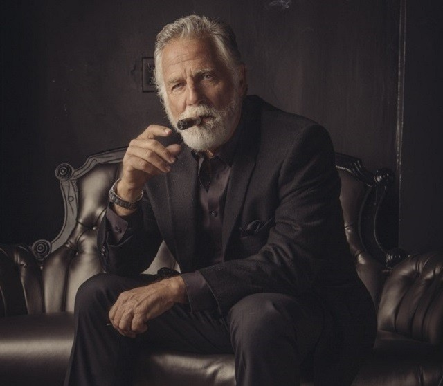

His only regret is not having any regrets.
He can kill two stones with one bird.
He once won a staring contest with his own reflection.
He has never waited 15 minutes after finishing a meal before returning to the pool.
In museums, he is allowed to touch the art.
Once he ran a marathon because it was “on the way”.
He is left-handed. And right-handed.
He once caught the Loch Ness Monster….with a cane pole, but threw it back.
He once tried to acquire a cold just to see what it felt like, but it didn’t take.
He played a game of Russian Roulette with a fully loaded magnum, and won.
His organ donation card also lists his beard.
He lives vicariously through himself.
He is allowed to talk about the fight club.
His signature won a Pulitzer.
He once had an awkward moment, just to see how it feels.
When he was young he once sent his parents to his room.
He never wears a watch because time is always on his side.
Once while sailing around the world, he discovered a short cut.
When in Rome, they do as HE does.
Mosquitoes refuse to bite him purely out of respect.
Panhandlers give him money.
The police often question him, just because they find him interesting.
